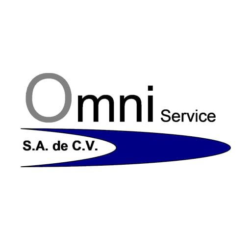

Empresas Donde Puedo Encontrar Pasantías en El Salvador
He investigado tres empresas que ofrecen pasantías relacionadas con mi carrera:
1. Guadrón Quijano
Es una consultora de marketing digital en El Salvador con más de 13 años de experiencia en mercados diversos. No solo se dedican a asesorar, sino que ejecutan estrategias completas que optimizan el marketing, desarrollo web y publicidad digital de empresas establecidas. Su enfoque combina creatividad, tecnología y datos para ofrecer soluciones personalizadas que impulsan el crecimiento y maximizan resultados. Se especializa en desarrollo web, branding y publicidad en línea, posicionándose como una consultora integral en el sector digital salvadoreño.

2. Empaques y Sabores S.A. de C.V.
Es una empresa familiar salvadoreña registrada desde 2012, con 21 años de experiencia en el sector de alimentos y panadería. La empresa está ubicada en Colonia San Francisco, Av Las Bugambilias, Polígono 17, Pasaje 6 No L-15-A, San Salvador. Se especializa en la elaboración de productos de panadería fina y se describe como dedicada a "agradar a nuestros clientes con sabores exquisitos".
3. Omniservice S.A. de C.V.
Es una empresa establecida de seguridad electrónica que ofrece protección 24/7 para hogares, negocios y empresas. Se dedica a la venta, instalación y mantenimiento de sistemas de seguridad, incluyendo alarmas, CCTV, sistemas contra incendios y control de acceso. Según reseñas de empleados, es descrita como "una excelente empresa de sistemas de seguridad" con "trato excelente a sus empleados" y un "ambiente de tranquilidad". La empresa también ofrece servicios de GPS con botón de pánico para emergencias y sistemas de monitoreo las 24 horas en todo El Salvador.
